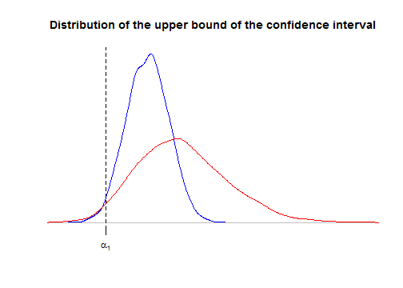

-
Reducing a model to get confidence intervals
2014-04-12
SourceReducing the one-way ANOVA model with random effects
Consider the balanced one-way ANOVA model with random effects, call \(\cal M\) this model: \[({\cal M})\colon \qquad \begin{cases} (y_{ij} \mid \mu_i) \sim_{\text{iid}} {\cal N}(\mu_i, \sigma^2_w) & j=1,\ldots,J \\ \mu_i \sim_{\text{iid}} {\cal N}(\mu, \sigma^2_b) & i=1,\ldots,I \end{cases}.\] Let us derive the distribution of the observed group means \(\bar{y}_{i\bullet}\): \[(\bar{y}_{i\bullet} \mid \mu_i) \sim {\cal N}\left(\mu_i, \frac{\sigma^2_w}{J}\right)\] for every \(i=1,\ldots,I\), and finally \[\bar{y}_{i\bullet}\sim_{\text{iid}} {\cal N}\left(\mu, \sigma^2_b+\frac{\sigma^2_w}{J}\right) \qquad i=1,\ldots,I.\]
Denote \(z_i=\bar{y}_{i\bullet}\) for more clarity. Thus \({(z_i)}_{i=1}^I\) is a sample of iid Gaussian distributions: \[({\cal M}')\colon \qquad z_i \sim_{\text{iid}} {\cal N}\left(\mu, \delta^2\right), \quad i=1,\ldots,I\] with \(\delta^2=\sigma^2_b+\frac{\sigma^2_w}{J}\).
Thus, we have a new model \({\cal M}'\) derived from \(\cal M\) and for which there is a well-known \(100(1-\alpha)\%\)-confidence interval around \(\mu\): \[\bar{z}_{\bullet} \pm t^*_{I-1}(\alpha/2)\frac{SS(z)}{(I-1)I}\] where \(SS(z)=\sum_{i=1}^I{(z_i-\bar{z}_{\bullet})}^2\) is the total variation of the \(z_i\). Compare this confidence interval to the one derived at the end of my article about the balanced one-way ANOVA model with random effects: they are exactly the same !
Thus, there's no lost of information about \(\mu\) when we observe only the group means \(\bar{y}_{i\bullet}\).
General principle of model reduction
Was the previous remark an expected one ? Given the original model \(\cal M\) with observations \(y=(y_{ij})\), the reduced model \({\cal M}'\) has been derived by considering the \(z_i:=f_i(y)\) as the observations for some functions \(f_i\). The parameter \(\mu\) appears in both models.
The obvious thing is that any \(100(1-\alpha)\%\)-confidence interval about \(\mu\) in the reduced model \({\cal M}'\) also is a \(100(1-\alpha)\%\)-confidence interval about \(\mu\) in the original model \(\cal M\). But generally such a method will not provide an optimal confidence interval (in a sense to be made precise), as shown by the following other example
Reducing the two-ways ANOVA model without interaction
Consider the fixed effects two-ways ANOVA model with replications but without interaction : \[({\cal M})\colon \qquad y_{ijk} \sim {\cal N}(\mu+\alpha_i+\beta_j, \sigma^2), \qquad i=1,\ldots,I, \quad j=1,\ldots,J, \quad k=1,\ldots,K,\] with \(\sum \alpha_i=\sum \beta_j=0\) and assuming as usual independent observations \(y_{ijk}\).
Now consider the reduced model obtained by averaging the observations in the same "cell" \((i,j)\):
\[({\cal M}')\colon \qquad \bar y_{ij\bullet} \sim {\cal N}\left(\mu+\alpha_i+\beta_j, \frac{\sigma^2}{K}\right), \qquad i=1,\ldots,I, \quad j=1,\ldots,J.\]
The reduced model \({\cal M}'\) is a fixed effects two-ways ANOVA model without interaction and without replications. We will consider for our illustration that \(I=2\), hence \(\alpha_2=-\alpha_1\), and we will compare the confidence intervals about \(\alpha_1\) obtained by considering either model \(\cal M\) or model \({\cal M}'\).
Let us simulate some data
I <- 2 J <- 3 K <- 4 effects1 <- c(1,-1) effects2 <- 1:J - mean(1:J) dat <- data.frame(factor1=rep(1:I,each=J*K), factor2=rep(1:J,times=I*K)) set.seed(666) dat <- transform(dat, y=rnorm(I*J*K, effects1[factor1]+effects2[factor2]), factor1=factor(factor1), factor2=factor(factor2) ) head(dat)## factor1 factor2 y ## 1 1 1 0.7533 ## 2 1 2 3.0144 ## 3 1 3 1.6449 ## 4 1 1 2.0282 ## 5 1 2 -1.2169 ## 6 1 3 2.7584Fitting the model as follows, the parameter of interest \(\alpha_1=1\) is named
factor11in R:fit1 <- lm(y~factor1+factor2,data=dat,contrasts=list(factor1="contr.sum",factor2="contr.sum")) pandoc.table(confint(fit1), style="rmarkdown", digits=3, emphasize.rows=2)2.5 % 97.5 % (Intercept) -0.595 0.521 factor11 0.43 1.55 factor21 -1.7 -0.116 factor22 -0.46 1.12 Now we look at the confidence interval in the reducel model \({\cal M}'\):
mdat <- aggregate(y~factor1+factor2, data=dat, FUN=mean) fit2 <- lm(y~factor1+factor2,data=mdat,contrasts=list(factor1="contr.sum",factor2="contr.sum")) pandoc.table(confint(fit2), style="rmarkdown", digits=3, emphasize.rows=2)2.5 % 97.5 % (Intercept) -0.82 0.746 factor11 0.206 1.77 factor21 -2.01 0.202 factor22 -0.778 1.44 The confidence interval in \({\cal M}'\) is wider than the one in \(\cal M\). Let us use simulations to see this more precisely. Below we use simulations to derive the distributions of the upper bound of the confidence interval in \(\cal M\) and \({\cal M}'\). We use the
localfunction to preserve our preliminary defined objectsdat,fit1, andfit2. We also evaluate, for each model the power of the test for \(H_0\colon\{\alpha_1=0\}\) derived from the confidence interval.nsims <- 5000 confint1 <- confint2 <- NULL power1 <- power2 <- rep(NA,nsims) local({ for(i in 1:nsims){ # new data dat <- within(dat, y <- rnorm(I*J*K, effects1[factor1]+effects2[factor2])) # model M fit1 <- lm(y~factor1+factor2,data=dat,contrasts=list(factor1="contr.sum",factor2="contr.sum")) ci <- confint(fit1)[2,] power1[i] <<- ci[1]>0 || ci[2]<0 confint1 <<- rbind(confint1,ci) # model M' mdat <- aggregate(y~factor1+factor2, data=dat, FUN=mean) fit2 <- lm(y~factor1+factor2,data=mdat,contrasts=list(factor1="contr.sum",factor2="contr.sum")) ci <- confint(fit2)[2,] power2[i] <<- ci[1]>0 || ci[2]<0 confint2 <<- rbind(confint2,ci) } }) plot(density(confint1[,2]), main="Distribution of the upper bound of the confidence interval", ylab=NA, xlab=NA, axes=FALSE, col="blue", xlim=range(confint2[,2])) lines(density(confint2[,2]), col="red") alpha1 <- effects1[1] axis(1, at=alpha1, labels=expression(alpha[1])) abline(v=alpha1, lty="dashed")
As we said in the previous section, the confidence interval derived from the reduced model \({\cal M}'\) is correct: for both curves, the area at the left of \(\alpha_1\) is \(2.5\%\). But the upper bound is considerably more dispersed for model \({\cal M}'\), thereby showing that the confidence interval is more likely wider for model \({\cal M}'\).
As a consequence, the power of the test of \(H_0\colon\{\alpha_1=0\}\) is higher for \(\cal M\):
mean(power1)## [1] 0.9954mean(power2)## [1] 0.7116Note that \(H_0\) means that the first factor has no effect, and actually it can be shown that the test based on the confidence interval is exactly the same as the classical Fisher test provided by the
anovafunction:anova(fit1)## Analysis of Variance Table ## ## Response: y ## Df Sum Sq Mean Sq F value Pr(>F) ## factor1 1 23.5 23.46 13.64 0.0014 ** ## factor2 2 10.1 5.05 2.93 0.0763 . ## Residuals 20 34.4 1.72 ## --- ## Signif. codes: 0 '***' 0.001 '**' 0.01 '*' 0.05 '.' 0.1 ' ' 1anova(fit2)## Analysis of Variance Table ## ## Response: y ## Df Sum Sq Mean Sq F value Pr(>F) ## factor1 1 5.86 5.86 29.51 0.032 * ## factor2 2 2.52 1.26 6.35 0.136 ## Residuals 2 0.40 0.20 ## --- ## Signif. codes: 0 '***' 0.001 '**' 0.01 '*' 0.05 '.' 0.1 ' ' 1We can understand why the power is suboptimal in \({\cal M}'\). As you know, the \(F\) statistic is the ratio of the mean square of factor \(1\) over the residual mean square. The residual sum of squares in the decomposition of the variation provided by
anova(fit1): \[ SS(y) = SS_A(y) + SS_B(y) + SS_{ {(1+A+B)}^\perp}(y) \] can be itself decomposed by including the interaction term, thereby yielding a new decomposition : \[ SS(y) = SS_A(y) + SS_B(y) + SS_{AB} + SS_{ {(1+A+B+AB)}^\perp}(y) \] which is here:anova(update(fit1, y~factor1*factor2))## Analysis of Variance Table ## ## Response: y ## Df Sum Sq Mean Sq F value Pr(>F) ## factor1 1 23.5 23.46 12.87 0.0021 ** ## factor2 2 10.1 5.05 2.77 0.0895 . ## factor1:factor2 2 1.6 0.80 0.44 0.6531 ## Residuals 18 32.8 1.82 ## --- ## Signif. codes: 0 '***' 0.001 '**' 0.01 '*' 0.05 '.' 0.1 ' ' 1The first three mean squares are exactly \(K=4\) times the sum of squares in \({\cal M}'\):
K*anova(fit2)[,2:3]## Sum Sq Mean Sq ## factor1 23.46 23.4594 ## factor2 10.09 5.0454 ## Residuals 1.59 0.7951Thus, we have the following equality about the classical Fisher statistic \(F'\) for \(H_0\colon\{\alpha_1=0\}\) in the reduced model \({\cal M}'\): \[ F' := \frac{MS_A(z)}{MS_{ {(1+A+B)}^\perp}(z)} = \frac{MS_A(y)}{MS_{AB}(y)} \sim F_{I-1, (I-1)(J-1)} \] whereas the classical Fisher statistic \(F\) for \(H_0\colon\{\alpha_1=0\}\) in the unreduced model \({\cal M}\) is: \[ F = \frac{MS_A(y)}{MS_{ {(1+A+B)}^\perp}(y)} \sim F_{I-1, (I-1)(J-1) + IJ(K-1)} \] thereby showing that the reducel model \({\cal M}'\) yields a less powerful test.
Why does it work for the random effects one-way ANOVA model ?
Using the hierarchical writing of the model \[\begin{cases} (y_{ij} \mid \mu_i) \sim_{\text{iid}} {\cal N}(\mu_i, \sigma^2_w) & j=1,\ldots,J \\ \mu_i \sim_{\text{iid}} {\cal N}(\mu, \sigma^2_b) & i=1,\ldots,I \end{cases},\] it is quite easy to write down the joint distribution of the \(y_{ij}\) and the \(\mu_i\). Setting \(\sigma^2=J\sigma^2_b+\sigma^2_w\) and integrating over the \(\mu_i\) yields the likelihood \[ L\bigl(\mu, \sigma_b, \sigma_w \mid \{y_{ij}\}\bigr) \propto {(\sigma_w^2)}^{-\frac{I(J-1)}{2}}{(\sigma^2)}^{-\frac{I}{2}} \exp\left[-\frac{1}{2}\left( \frac{IJ{(\bar{y}_{\bullet\bullet}-\mu)}^2}{\sigma^2} + \frac{SS_b(y)}{\sigma^2} + \frac{SS_w(y)}{\sigma^2_w} \right)\right], \] thereby showing that the triple of the three summary statistics \(\bigl\{\bar{y}_{\bullet\bullet}, SS_b(y), SS_w(y)\bigr\}\) is sufficient for \((\mu, \sigma_b, \sigma_w)\).
Moreover, because of the equality \[IJ{(\bar{y}_{\bullet\bullet}-\mu)}^2 + SS_b(y) = J\sum_{i=1}^I {(\bar{y}_{i\bullet}-\mu)}^2,\] the likelihood can also be written \[ \begin{align} L\bigl(\mu, \sigma_b, \sigma_w \mid \{y_{ij}\}\bigr) & \propto {(\sigma_w^2)}^{-\frac{I(J-1)}{2}}{(\sigma^2)}^{-\frac{I}{2}} \exp\left[-\frac{1}{2}\left( \frac{J\sum_{i=1}^I {(\bar{y}_{i\bullet}-\mu)}^2}{\sigma^2} + \frac{SS_w(y)}{\sigma^2_w} \right)\right] \\ & \propto \left({(\sigma_w^2)}^{-\frac{I(J-1)}{2}} \exp\left[-\frac{1}{2} \frac{SS_w(y)}{\sigma^2_w} \right]\right) \left( {(\sigma^2)}^{-\frac{I}{2}} \exp\left[-\frac{1}{2} \frac{J\sum_{i=1}^I {(\bar{y}_{i\bullet}-\mu)}^2}{\sigma^2} \right] \right). \end{align} \]
That shows that the group means \(\bar{y}_{i\bullet}\) are sufficient for \((\mu, \sigma)\).
- Home
- About
- PoirotReproducible Blogging with R Markdown
- SlidifyReproducible html5 slides from R markdown
- R-bloggersBlog posts about R, contributed by R bloggers worldwide.
- stla.overblogMy previous blog
- Timely Portfolio A great blog about R, Javascript, and more